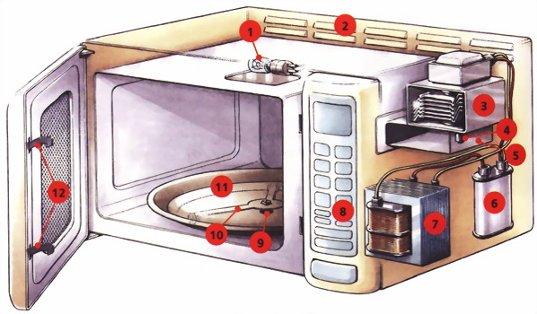
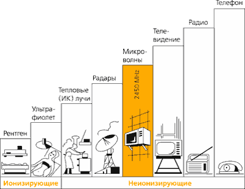
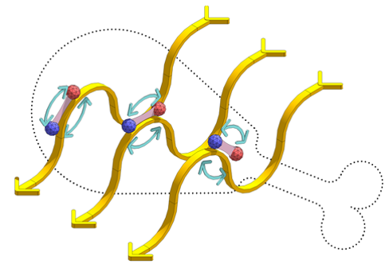
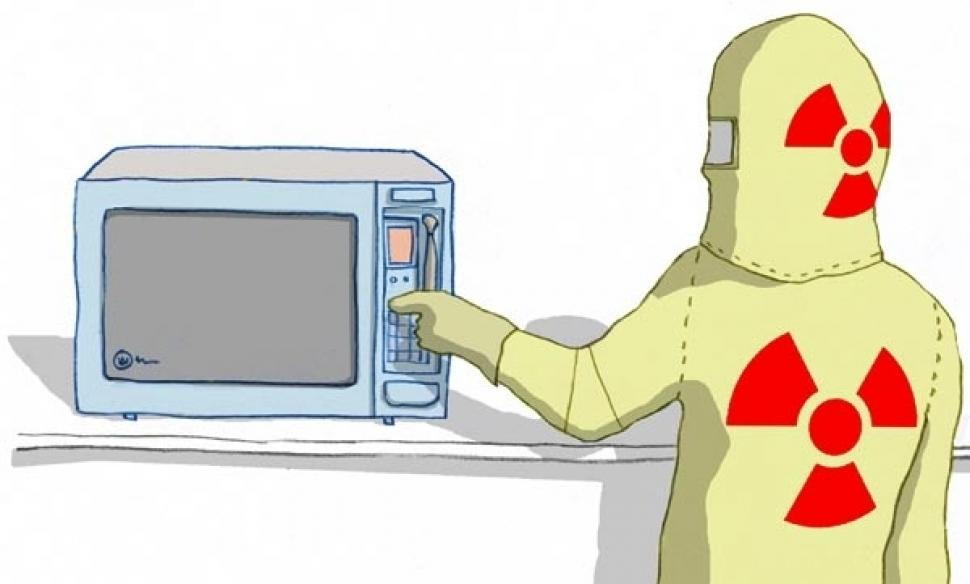
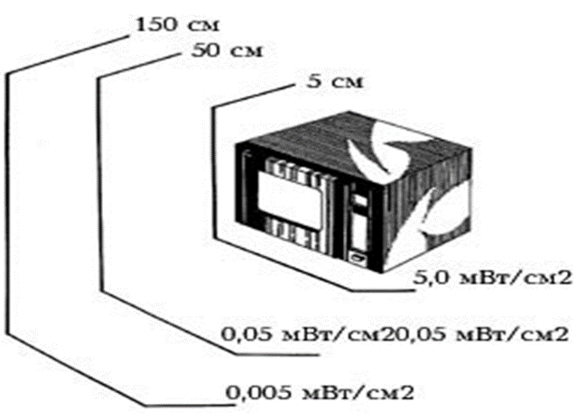
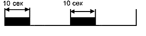
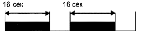
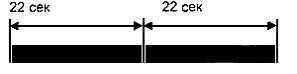
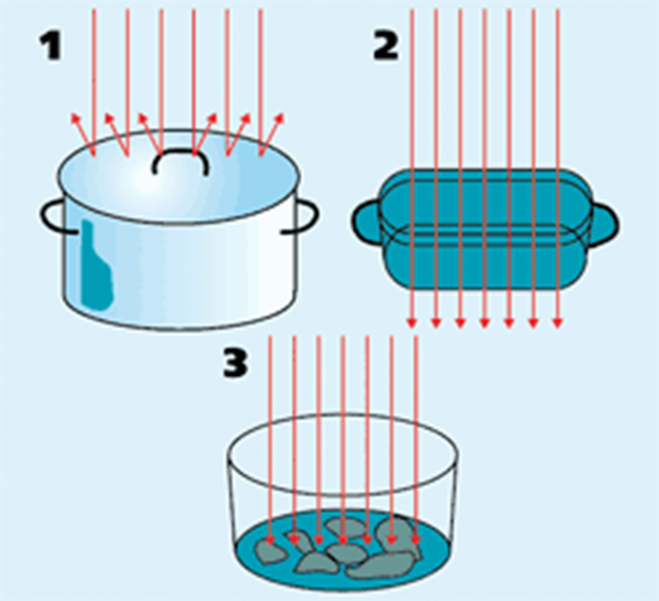

СВЧ
1942 год. Американский физик Перси Спенсер обнаружил эффект микроволн.
Устройство микроволновой печи
- Лампа освещения
- Вентиляционные отверстия
- Магнетрон
- Антенна
- Волновод
- Конденсатор
- Трансформатор
- Панель управления
- Привод
- Вращающийся поддон
- Сепаратор с роликами
- Защелка дверцы
Что такое микроволны?
Микроволновое излучение (Сверхвысокочастотное излучение) - это электромагнитные волны высокой частоты. Эти волны имеют такую же природу, как и радиоволны и являются совершенно безвредными. В бытовых СВЧ - печах частота составляет 2450 МГц. Такая частота установлена для микроволновых печей специальными международными соглашениями, чтобы не создавать помех работе радаров и иных устройств.
Зная, что электромагнитные волны распространяются со скоростью света с (скорость света в свободном пространстве (вакууме)), равной 300 000 км/с, нетрудно подсчитать, чему равна длина волны L микроволнового излучения данной частоты: L = c/f = 12,25 см.
Как микроволны нагревают пищу?
В состав продуктов питания входят многие вещества: минеральные соли, жиры, сахар, вода. Чтобы нагреть пищу с помощью микроволн, необходимо присутствие в ней дипольных молекул, то есть таких, на одном конце которых имеется положительный электрический заряд, а на другом — отрицательный. К счастью, подобных молекул в пище предостаточно — это молекулы и жиров и сахаров, но главное, что диполем является молекула воды — самого распространённого в природе вещества.
Каждый кусочек овощей, мяса, рыбы, фруктов содержит миллионы дипольных молекул.
В отсутствие электрического поля молекулы расположены хаотически. В электрическом поле они выстраиваются строго по направлению силовых линий поля, „плюсом“ в одну сторону, „минусом“ в другую. Стоит полю поменять направление на противоположное, как молекулы тут же переворачиваются на 180°.
Нагрев продуктов происходит за счёт двух физических механизмов — прогрева микроволнами поверхностного слоя и последующего проникновения тепла в глубину продукта за счёт теплопроводности.
Мифы о СВЧ – печах
- Микроволны радиоактивны или делают продукты радиоактивными?
- Микроволны изменяют молекулярную структуру продуктов питания или делают продукты канцерогенными?
- Микроволновые печи испускают опасное излучение?
- Микроволны проникают в зазоры между корпусом печи и дверцы?
Безопасное расстояние до СВЧ
Тем, кто опасается даже близко подходить к микроволновой печи, нужно знать, что микроволны очень быстро затухают в атмосфере. На частоте работы микроволновой печи (2450 МГц) проникновение излучения внутрь тела составляет несколько сантиметров и производимый им нагрев чувствуется при плотности мощности 20 — 50 мВт/см2 в течение нескольких секунд.
Время работы магнетрона

При 30 % мощности магнетрон работает 6 сек, затем отключается на 16 сек.
При 50% мощности магнетрон работает 10 сек, отключается на 12 сек.
При 70 % мощности магнетрон работает 16 сек, отключается на 6 сек.
При 100 % мощности магнетрон работает постоянно, не отключаясь.
Маркировка посуды
Разные материалы по-разному ведут себя по отношению к микроволнам, и для СВЧ-печи годится не всякая посуда. Металл отражает микроволновое излучение, поэтому внутренние стенки полости печи делают из металла, чтобы он отражал волны к пище.
Стекло, фарфор, сухие картон и бумага пропускают микроволны сквозь себя. В последнее время многие производители снабжают посуду маркировкой, указывающей на допустимость применения в микроволновой печи.
Продукты питания поглощают микроволны. Так же ведут себя глина и пористая керамика, применять которые, в СВЧ-печах не рекомендуется.